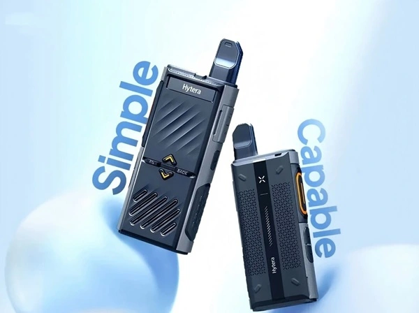
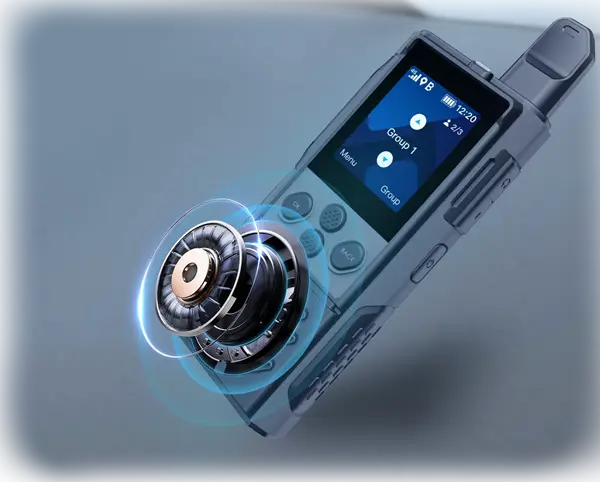
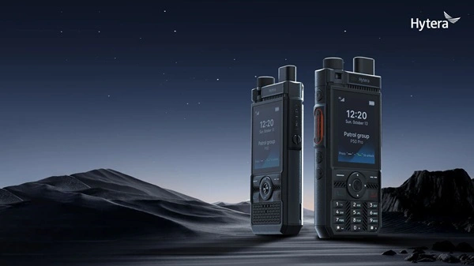
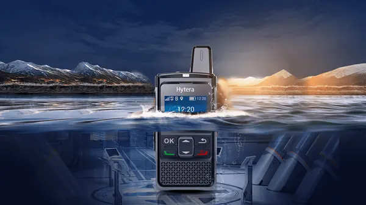

Push-to-Talk Radios
Professional Mobile Communication
P30 Lite
PoC radio
A compact, NFC-enabled push-to-talk device designed to bring smarter communication to industries such as security,
retail, hospitality, and transportation.
Key features:
🔹 NFC for patrol management, access control, and task logging
🔹 Crystal-clear 105dB audio for noisy environments
🔹 Up to 33 hours of runtime + hot-swappable battery
🔹 Accurate GPS/GLONASS/BDS positioning
🔹 Built tough with IP54 rating and 1.2m drop resistance

P30 PoC Radio
P30 is all about being your out-of-the-box radio.
Say goodbye to exhausting programming and hello to instant group calling with the P30.
An audio experience that brings clarity. Every message with P30 PoC radio comes across as clear as day
- Multiple standby groups
- Low latency communications
- Unlimited coverage for distances > 10,000 km
- Ultra-long battery runtime of 72 hours
- MIL-STD-810 ruggedness
- IP54 weatherproof

P50/P50 Pro PoC Radio
The P5 Series has arrived! Say hello to the P50 and P50 Pro, Hytera’s latest Push-to-talk over Cellular (PoC) radios, combining durability, simplicity, and unbeatable performance. Whether you're in security, logistics, transportation, or any fast-paced industry, the P5 Series is your go-to communication solution. Tough on the outside, smart on the inside—ready to take on whatever your day throws at you!

PNC360S PoC Radio
Simplify the way to communicate with your teammates!
Say goodbye to unclear audio in very noisy environments, intermittent voice call issues in areas with a weak signal, short battery life, and unstable performance in humid and dusty conditions.
PNC360S PoC radio was specifically designed with businesses in mind. It is the best choice for those engaged in supermarkets, hotels, logistics, industrial parks, urban and property management, and more.
